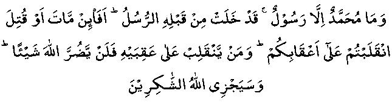

Everyone knows of the bravery, courage and strength of ‘Umar (RA). Even after 1400 years, hearts are shivering with awe and respect when his name is mentioned. Islam could not be spoken about and preached openly before 'Umar's (RA) coming into Islam. As soon as he accepted Islam, the Muslims started saying Salaah in the Haram, as none could dare harm them with 'Umar (RA) on their side.
Notwithstanding all this, he could not bear the shock of Nabi (Sallallahu Alayhi Wasallam) passing away. So much so that he stood with a sword in his hand, very confused and dazed saying: "I shall cut off the head of the person who says that Nabi (Sallallahu Alayhi Wasallam) has passed away. Nabi (Sallallahu Alayhi Wasallam) has only gone to visit his Lord, just as Moosa ^ had gone to Toor. He will shortly return and cut off the hands and feet of those who were spreading the false news of his death."
On the other hand, 'Uthmaan (RA) was stunned with grief on this event. He could not utter a single word, even till the next day and walked about without speaking. Ali (RA) too, was in terrible grief. He was still and couldn’t move. Only Abu Bakr (RA) with all his love for Nabi (Sallallahu Alayhi Wasallam) as we have seen in the last story, stood firm as a rock against this terrible storm of grief and did not lose his composure. He calmly entered Nabi (Sallallahu Alayhi Wasallam) house, kissed his forehead and came back to the people. He called 'Umar (RA) to sit down, and began to speak to the people.
He said: "Whoever worshipped Muhammad (Sallallahu Alayhi Wasallam), let him know that Muhammad is no more and whoever worshipped Allah Ta’ala should know that Allah Ta’ala is Ever living and forever. He then recited the following verse of the Qur-aan:

"Muhammad is but a Rasool, many Rusul have passed away before him. Will it be that when he dies or is killed, you will turn back on your heels? He who turns back does not hurt Allah, and Allah will reward those who are grateful." (S3 : V144).
As Abu Bakr (RA) was supposed to be the Khalifah after Nabi (Sallallahu Alayhi Wasallam), it is important that, unlike other Sahaabah (RA), he behaved with the calm and patience that were needed on an occasion like this. Again, it was Abu Bakr (RA) alone who knew better than anybody else about the laws regarding the burial, inheritance, etc, of Nabi (Sallallahu Alayhi Wasallam). When a difference of opinion arose among the Sahaabah (RA) whether the burial place of Nabi (Sallallahu Alayhi Wasallam) be at Makkah Mukarramah or Madinah Munawwarah or Jerusalem, it was Abu Bakr (RA) who settled the difference by saying on the authority of Nabi (Sallallahu Alayhi Wasallam) that, Ambiyaa (عَلَيْهِمُ السَّلَام) are buried where they have died. There were several other Ahaadith known only to Abu Bakr (RA) that helped solve many of the other problems on the death of Nabi (Sallallahu Alayhi Wasallam).
Some of these Ahaadith were:
"Ambiyaa (عَلَيْهِمُ السَّلَام) have no heirs. All that a Nabi leaves behind is Sadaqah."
"Allah's curse is on the Amir who does not take proper interest and does not take proper care in the appointment of his deputies."
"The leadership shall remain in the custody of Quraish."